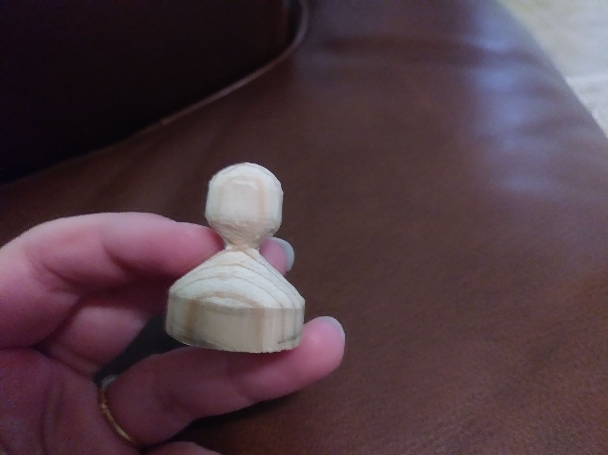

Draw it out and measure.
Measuring is the most important step, because there are no do-overs with wood.
Make a mark 1/4 inch from the bottom of your 1 inch by 1 inch dowel. Continue this mark around the dowel so that the 1/4 inch line is visible from all sides.
From the top of the dowel, measure a 1/2 in diameter circle in the center. This can be done by making marks every so often at 1/4 inch distance fromt the edge of the dowel if you do not have a protractor.
From the 1/4 inch mark, cut in a sloping fashion up to the top, gradually thinning the tip to match the edges of the circle.

Make a mark 1/8 in from the top all the way around, then another 3/8 inch above the bottom ridge, then another 3/16 inch below that.
Cut your slope up to the lowest mark. Then cut from the mark just above it to make a lopsided valley.
Cut from the top mark to the top of the dowel, rounding off the head of the pawn.
Sand off all the rough edges.
Anna Lewis Campbell
aalxbt@umsystem.edu